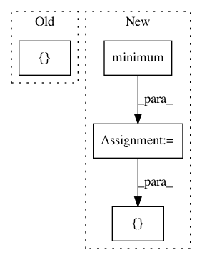

3f94bc83bf29a7edf887f48f1ece6dc4306d439e,tf_agents/bandits/environments/stationary_stochastic_per_arm_py_environment.py,StationaryStochasticPerArmPyEnvironment,_observe,#StationaryStochasticPerArmPyEnvironment#,123
Before Change
], (self._batch_size, self._max_num_actions, -1))
self._observation = {GLOBAL_KEY: global_obs, PER_ARM_KEY: arm_obs}
if self._add_mask:
num_actions = [[self._num_actions_fn()] for _ in range(self._batch_size)]
num_actions = np.maximum(num_actions, 1)
mask = np.array(
np.less(range(self._max_num_actions), num_actions), dtype=np.int32)
After Change
if self._num_actions_fn:
num_actions = [self._num_actions_fn() for _ in range(self._batch_size)]
num_actions = np.maximum(num_actions, 1)
num_actions = np.minimum(num_actions, self._max_num_actions)
if self._add_num_actions_feature:
self._observation.update({NUM_ACTIONS_KEY: num_actions})
else:
mask = np.array(
np.less(range(self._max_num_actions), [[i] for i in num_actions]),
dtype=np.int32)
self._observation = (self._observation, mask)
return self._observation
In pattern: SUPERPATTERN
Frequency: 3
Non-data size: 4
Instances
Project Name: tensorflow/agents
Commit Name: 3f94bc83bf29a7edf887f48f1ece6dc4306d439e
Time: 2020-06-04
Author: bartok@google.com
File Name: tf_agents/bandits/environments/stationary_stochastic_per_arm_py_environment.py
Class Name: StationaryStochasticPerArmPyEnvironment
Method Name: _observe
Project Name: onnx/onnx-tensorflow
Commit Name: 58ace0a10f2859a7bfbb9b56238ba47e4175f5ac
Time: 2020-10-09
Author: wtsang@us.ibm.com
File Name: onnx_tf/handlers/backend/min.py
Class Name: Min
Method Name: _common
Project Name: biolab/orange3
Commit Name: 30f7e8327c8ff9ce129b4dce42b79ba5969afe23
Time: 2016-07-22
Author: tankovesna@hotmail.com
File Name: Orange/widgets/classify/tests/test_owadaboostclassification.py
Class Name: TestOWAdaBoostClassification
Method Name: setUp